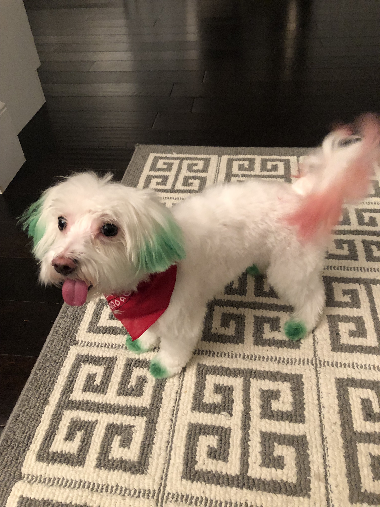
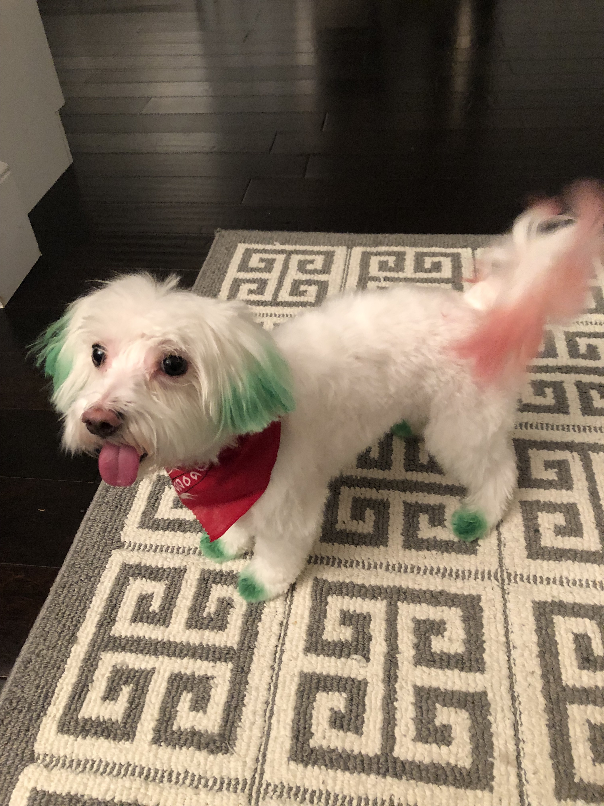

Finn

Finn is a 7 year old grey cat. I feel like no one really knows cat breeds so I’m just gonna go with grey. He loves doing tricks for treats and his favorite is giving high fives to people. He might as well be a dog as he loves the outdoors and meeting new people. I can only describe him as goofy and chaotic.
Finn’s biggest enemy is his vet. I don't know whether or not it’s because his vet is an MSU alum, but he doesn’t like him. He actually has to be prescribed a sedative before he goes to the vet office because he’ll suddenly act like he was never a house cat for 7 years.
Photo Gallery


Likes
- Treats
- Head Rubs
- Sleeping in cardboard boxes
Lucy

Lucy is a 17-year-old calico that I’ve had since I was 5, she has pretty much grown up with me my whole life. Even though she’s old she’s still kickin’ it and enjoys running around the house at 4am.
Her favorite foods include anything but her kibble. She enjoys sunbathing and long naps, along with lots of petting. However, she hates getting her stomach rubbed.
Photo Gallery


Likes
- Sleeping
- Food
- Her bed
Milo

Milo, a bashful yet warm-hearted dog, holds a deep appreciation for social interactions, whether they involve humans or fellow pets. Having spent his entire life with the same loving family, Milo's consistent displays of loyalty reflect his strong sense of familiarity and connection. He's known for his charming quirks, such as his penchant for taking a few steps backward instead of a simple turn when changing direction.
Despite his shyness, Milo's keen senses come to the forefront. At the sound of a passing car, his bark, though more bark than bite, resonates beyond the walls of the house. Interestingly, Milo has never quite grasped the concept of navigating stairs, yet he remains remarkably perceptive about his surroundings. It's this unique blend of traits that makes Milo an endearing presence, leaving a lasting impression on those fortunate enough to share in his companionship.
Photo Gallery
 



Likes
- Bacon
- Socks
- Attention
Dollar

Dollar is a 1 and a half year old Australian shepherd. His favorite games are tug of war and fetch. Sometimes, when he goes out for walks, he will pick up a stick to get his owners to play fetch with him. At night, he likes to cuddle with his owners. He would snuggle up and put his nose on their arm to let them know that he wants pets.
Dollar has a gourmet taste for food. He hates eating kibble and will only eat premium chicken bits with eggs. His favorite snacks are bell peppers, beef bits, and peanut butter. Dollar is incredibly smart and will only do tricks when you present him with snacks.
Photo Gallery


Likes
- Bacon Bits
- Taking Walks in the park
- jumping on the sofa
Rosie

Rosie is a small but super energetic dog. Whenever someone comes to the house she is very quick to run up and greet them. She loves to play fetch and will not leave you alone with her toys as she begs you to play with her.
Rosie is also a wonderful lap dog. If you sit on the couch she is quick to find a spot next to you. If you wear a blanket over your legs, you’ll find her laying on your legs. She loves to cuddle and loves to be pet so she will always be right up on you.
Photo Gallery


Likes
- Treats
- Fetch
- Cuddles